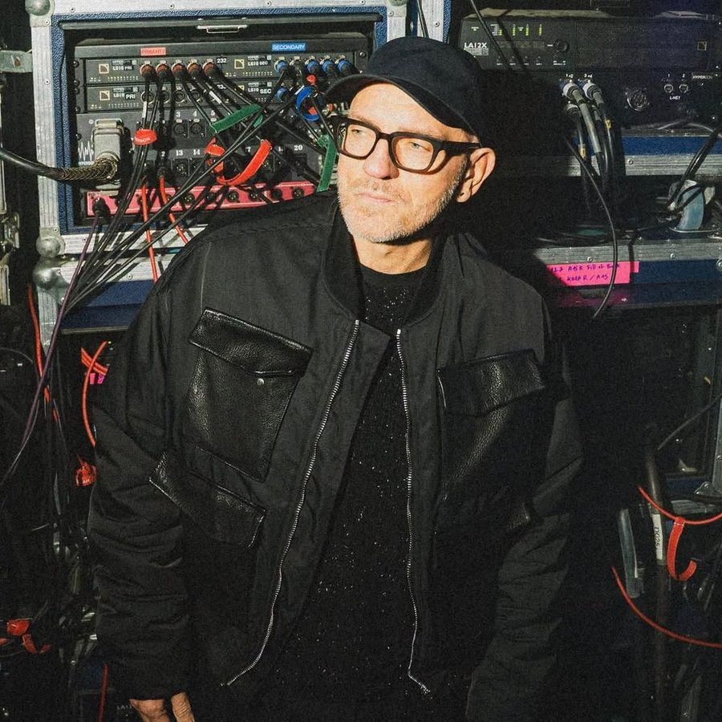

Sven Vath [Audio]: up all night


Is it too early to nominate Sven Vath as the hero of Future Music Festival 2010? One week in to the tour, the man has already matched his Herculean efforts here two years ago.
While most DJs would be content to play a festival slot and retreat to the hotel, Sven is not most DJs. After the Perth event, the Cocoon boss was itching to play a few more records – which turned into six hours of records in one lucky local’s backyard. As fellow house-party guests Booka Shade told ITM, “He’s an addict, he can’t get enough and always wants to play somewhere.”
This kind of behaviour is of course all part of the Sven Vath mystique. With over 20 years invested in techno, he remains unfailingly passionate about the potential of music to bring people together. His parting words to the house-party host say it all: “Life’s too short, enjoy this moment and remember it forever, as I will.”
In the lead-up to the festival, ITM’s Angus Paterson got on the phone with one of the most compelling figures in dance music.
Sven Vath will keep on rolling at the remainder of the Future Music Festival stops, with a couple of sideshows along the way (of course).
Fri 5 March – Metro Theatre, Sydney
Sat 6 March – Sydney FMF
Sun 7 March – Melbourne FMF
Sun 7 March – Official FMF afterparty, Yellow @ Neverland, Melbourne
Mon 8 March – Adelaide FMF